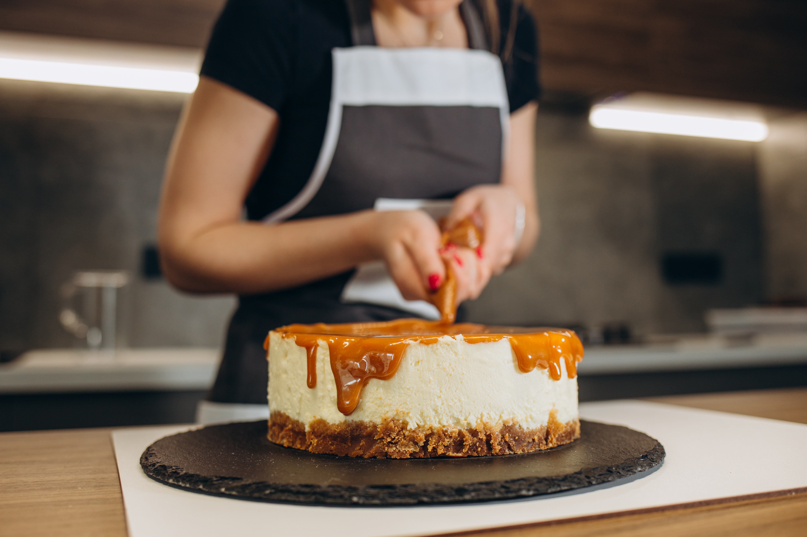

How to make caramel
24 may 2023
3 min
Learn how to make smooth, golden caramel with just sugar and a little patience. Follow these simple steps for perfect results every time.

About this technique
Skill level
Intermediate
Equipment
Heavy-based saucepan
Pastry brush
Baking tray, lined with non-stick baking parchment
Combine sugar and water in a heavy-bottomed saucepan and heat gently until the sugar has dissolved. Avoid stirring once the mixture begins to heat. If sugar crystals form on the sides of the pan, brush them away with a little water to keep the caramel smooth.
Increase the heat and let the syrup boil until it turns a deep golden color. Keep a close eye on it, as caramel can quickly go from perfect to burnt.
For hard caramel, pour the mixture onto baking paper and leave it to cool before breaking it into pieces. For a caramel sauce, remove it from the heat and carefully stir in cream and butter according to your recipe. Perfect for desserts, ice cream, and pancakes.